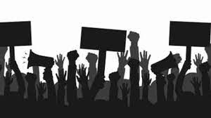

What is Internet Activism?
When people don't agree with a certain idea or philosophy whether political or not, they form groups centered around a common belief that what they are doing is for the greater good, over time ssuch groups can be a very powerful and inflential force to be reckoned with. Internet activism is online activism that aims to create change through the use of digital campaigning, online organizing, and using electronic communications to create change for the good of all peoples
Examples of Internnet Activism